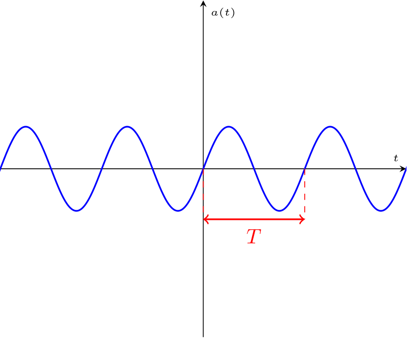

Definizione - Segnale periodico
Una grandezza tempovariante (segnale) \( a(t)\) si definisce periodica se si ripete ad ogni periodo \( T\) (misurato in secondi \( \mathrm{ \, s }\)), ovvero \[ a(t) = a(t + T) \] È possibile definire inoltre:

- la frequenza \( f\) (misurata in \( \frac{1}{\mathrm{ \, s }}\)) che indica il numero di periodi utili nell'unità di tempo, calcolabile come \[ f = \frac{1}{T} \]
- il valore medio \( A_m\), calcolabile come \[ A_m = \frac{1}{T} \cdot \int_0^T a(t) \ dt \]
- il valore efficace \( A_{eff}\), calcolabile come \[ A_{eff} = \sqrt{\frac{1}{T} \cdot \int_0^T a^2(t) \ dt} \]
Definizione - Segnale alternato
Un segnale \( a(t)\) si definisce alternato un segnale periodico con valore medio nullo (\( A_m = 0\)).
Definizione - Segnale sinusoidale
Un segnale \( a(t)\) si definisce sinusoidale se è un segnale alternato della forma \[ a(t) = \hat{A} \cdot \cos\left( \omega \cdot t + \alpha \right) \] dove:
- \( \hat{A}\) è detto valore di picco (indicato anche dal simbolo \( \hat{ \ }\));
- \( \omega\) è detto pulsazione, uguale a \[ \omega = 2 \cdot \pi \cdot f \]
- \( \alpha\) è detta fase.
Dimostrazione - Valore medio nullo di segnali sinusoidali
Data la proposizione
Enunciato:
Considerando un generico segnale sinusoidale \( a(t)\) esso ha valore medio nullo, ovvero \[ A_m = 0 \]
Dimostrazione:
Per dimostrare questa proposizione consideriamo che un generico segnale sinusoidale è uguale a \[ a(t) = \hat{A} \cdot \cos\left( \omega \cdot t + \alpha \right) \] e il valore medio è uguale a \[ \begin{array}{ccl} A_m & = & \frac{1}{T} \cdot \int_0^T a(t) \ dt \\ & = & \frac{1}{T} \cdot \int_0^T \hat{A} \cdot \cos\left( \omega \cdot t + \alpha \right) \ dt \end{array} \] e dato che l'integrale del coseno sul suo periodo è nullo, si ha che \[ \begin{array}{ccl} A_m & = & \frac{1}{T} \cdot \int_0^T \hat{A} \cdot \overbrace{\cos\left( \omega \cdot t + \alpha \right) \ dt}^0 \\ & = & 0 \end{array} \] che dimostra la proposizione.
Dimostrazione - Valore efficace di segnali sinusoidali
Data la proposizione
Enunciato:
Considerando un generico segnale sinusoidale \( a(t)\) esso ha valore efficace uguale a \[ A = A_{eff} = \frac{\hat{A}}{\sqrt{2}} \] Si ha che \( \sqrt{2}\) è detto fattore di forma.
Dimostrazione:
Per dimostrare questa proposizione consideriamo che un generico segnale sinusoidale è uguale a \[ a(t) = \hat{A} \cdot \cos\left( \omega \cdot t + \alpha \right) \] e il valore efficace è uguale a \[ \begin{array}{ccl} A_{eff} & = & \sqrt{\frac{1}{T} \cdot \int_0^T a^2(t) \ dt} \\ & = & \sqrt{\frac{1}{T} \cdot \int_0^T \left[\hat{A} \cdot \cos\left( \omega \cdot t + \alpha \right) \right]^2 \ dt} \\ & = & \sqrt{\frac{1}{T} \cdot \int_0^T \hat{A}^2 \cdot \cos^2\left( \omega \cdot t + \alpha \right) \ dt} \\ & = & \sqrt{\frac{\hat{A}^2}{T} \cdot \int_0^T \cos^2\left( \omega \cdot t + \alpha \right) \ dt} \end{array} \] e, considerando la formula di duplicazione per cui \[ \cos^2(x) = \frac{1 + \cos(2 \cdot x)}{2} \] si ha che \[ \begin{array}{ccl} A_{eff} & = & \sqrt{\frac{\hat{A}^2}{T} \cdot \int_0^T \cos^2\left( \omega \cdot t + \alpha \right) \ dt} \\ & = & \sqrt{\frac{\hat{A}^2}{T} \cdot \int_0^T \frac{1 + \cos\left(2 \cdot \left(\omega \cdot t + \alpha \right) \right)}{2} \ dt} \\ & = & \sqrt{\frac{\hat{A}^2}{T} \cdot \int_0^T \frac{1}{2} + \frac{1}{2} \cdot \cos\left(2 \cdot \left(\omega \cdot t + \alpha \right) \right) \ dt} \\ & = & \sqrt{\frac{\hat{A}^2}{T} \cdot \left[ \int_0^T \frac{1}{2} \ dt + \frac{1}{2} \cdot \int_0^T \cos\left(2 \cdot \left(\omega \cdot t + \alpha \right) \right) \ dt \right]} \\ \end{array} \] e considerando che l'integrale del coseno è nullo, si ha che \[ \begin{array}{ccl} A_{eff} & = & \sqrt{\frac{\hat{A}^2}{T} \cdot \frac{T}{2}} \\ & = & \sqrt{\frac{\hat{A}^2}{2}} \\ & = & \frac{\hat{A}}{\sqrt{2}} \end{array} \] che dimostra la proposizione.
Definizione - Segnali isofrequenziali e sfasamento
Considerando due segnali \( a(t)\) \[ a(t) = \hat{A} \cdot \cos\left( \omega \cdot t + \alpha \right) \] e \( b(t)\) \[ b(t) = \hat{B} \cdot \cos\left( \omega \cdot t + \beta \right) \] con pulsazione \( \omega\) uguale, essi si dicono isofrequenziali.
È possibile definire lo sfasamento \( \varphi\) come la differenza di fase, uguale a \[ \varphi = \alpha - \beta \]
È possibile definire lo sfasamento \( \varphi\) come la differenza di fase, uguale a \[ \varphi = \alpha - \beta \]
Definizione - Denominazione sfasamento
In base al valore dello sfasamento \( \varphi = \alpha - \beta\), è possibile dire che:
- se \( \varphi\ = 0\), si dice che i due segnali sono in fase
- se \( \varphi\ \gt 0\), si dice che \( a(t)\) è in anticipo rispetto a \( b(t)\) e che \( b(t)\) è in ritardo rispetto ad \( a(t)\)
- se \( \varphi\ \lt 0\), si dice che \( b(t)\) è in anticipo rispetto a \( a(t)\) e che \( a(t)\) è in ritardo rispetto ad \( b(t)\)
- se \( \varphi\ = \pm \pi\), si dice che \( a(t)\) e \( b(t)\) sono in opposizione di fase
- se \( \varphi\ = \pm \frac{\pi}{2}\), si dice che \( a(t)\) e \( b(t)\) sono in quadratura